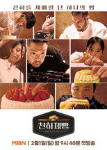
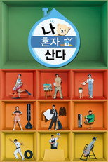
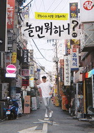
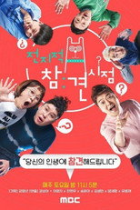
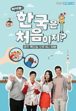

웨이브 예능123편 중 인기 60편
순서: 넷플릭스 한국 TOP10 에 든 작품을 먼저(최근에 든 순), 그다음은 TMDB 전 세계 인기도 순입니다 — 넷플릭스 외 서비스는 공식 순위를 공개하지 않습니다. 제공처는 JustWatch 자료(2026-09-23 확인)이며 가입 전 서비스에서 최종 확인하세요.
1 나는 SOLO I am Solo시리즈 · 2021 · 예능 · 넷플릭스, 왓챠, 티빙에도넷플릭스 한국 최고 1위2나는 SOLO, 그 후 사랑은 계속된다 I'm SOLO, Love goes on시리즈 · 2022 · 예능 · 넷플릭스, 왓챠, 티빙에도넷플릭스 한국 최고 3위3쯔양몇끼 Still Hungry시리즈 · 2026 · 예능 · 넷플릭스, 왓챠, 티빙에도넷플릭스 한국 최고 7위4연애기숙학교 돌싱N모솔 Romance School : First & Again시리즈 · 2026 · 예능 · 넷플릭스, 왓챠, 티빙에도넷플릭스 한국 최고 6위5
나는 SOLO I am Solo시리즈 · 2021 · 예능 · 넷플릭스, 왓챠, 티빙에도넷플릭스 한국 최고 1위2나는 SOLO, 그 후 사랑은 계속된다 I'm SOLO, Love goes on시리즈 · 2022 · 예능 · 넷플릭스, 왓챠, 티빙에도넷플릭스 한국 최고 3위3쯔양몇끼 Still Hungry시리즈 · 2026 · 예능 · 넷플릭스, 왓챠, 티빙에도넷플릭스 한국 최고 7위4연애기숙학교 돌싱N모솔 Romance School : First & Again시리즈 · 2026 · 예능 · 넷플릭스, 왓챠, 티빙에도넷플릭스 한국 최고 6위5 용감한 형사들 Brave Detectives시리즈 · 2022 · 범죄 · 예능 · 넷플릭스, 왓챠, 티빙에도넷플릭스 한국 최고 4위6이혼숙려캠프 Divorce Re-Boot Camp시리즈 · 2024 · 예능 · 넷플릭스, 왓챠, 티빙에도넷플릭스 한국 최고 4위7냉장고를 부탁해 Chef & My Fridge시리즈 · 2014 · 예능 · 왓챠, 티빙에도넷플릭스 한국 최고 2위8
용감한 형사들 Brave Detectives시리즈 · 2022 · 범죄 · 예능 · 넷플릭스, 왓챠, 티빙에도넷플릭스 한국 최고 4위6이혼숙려캠프 Divorce Re-Boot Camp시리즈 · 2024 · 예능 · 넷플릭스, 왓챠, 티빙에도넷플릭스 한국 최고 4위7냉장고를 부탁해 Chef & My Fridge시리즈 · 2014 · 예능 · 왓챠, 티빙에도넷플릭스 한국 최고 2위8 태어난 김에 세계일주 Adventure by Accident시리즈 · 2022 · 예능 · 넷플릭스, 티빙에도넷플릭스 한국 최고 2위12백종원의 레미제라블 Paik's Les Misérables시리즈 · 2024 · 예능 · 넷플릭스에도넷플릭스 한국 최고 5위13기안이쎄오 Kian is CEO시리즈 · 2024 · 예능 · 넷플릭스, 왓챠, 티빙에도넷플릭스 한국 최고 10위14
태어난 김에 세계일주 Adventure by Accident시리즈 · 2022 · 예능 · 넷플릭스, 티빙에도넷플릭스 한국 최고 2위12백종원의 레미제라블 Paik's Les Misérables시리즈 · 2024 · 예능 · 넷플릭스에도넷플릭스 한국 최고 5위13기안이쎄오 Kian is CEO시리즈 · 2024 · 예능 · 넷플릭스, 왓챠, 티빙에도넷플릭스 한국 최고 10위14 강철부대 The Iron Squad시리즈 · 2021 · 예능 · 왓챠에도넷플릭스 한국 최고 2위15태어난 김에 음악일주 Music Adventure by Accident시리즈 · 2024 · 예능 · 넷플릭스에도넷플릭스 한국 최고 4위16성적을 부탁해 티처스 upGRADE you: Teachers시리즈 · 2023 · 예능넷플릭스 한국 최고 8위17고딩엄빠 Teenage Parents시리즈 · 2022 · 예능 · 넷플릭스, 왓챠에도넷플릭스 한국 최고 6위18최강야구 A Clean Sweep시리즈 · 2022 · 예능 · 넷플릭스, 왓챠, 티빙에도넷플릭스 한국 최고 3위19뭉쳐야 찬다 The Gentlemen's League시리즈 · 2019 · 예능 · 왓챠, 티빙에도넷플릭스 한국 최고 8위20쉬는 부부 My SL Partner시리즈 · 2023 · 예능 · 왓챠, 티빙에도넷플릭스 한국 최고 6위21혜미리예채파 HYE MI LEE YE CHAE PA시리즈 · 2023 · 예능 · 코미디 · 왓챠, 티빙에도넷플릭스 한국 최고 10위22아는 형님 Men on a Mission시리즈 · 2015 · 예능 · 코미디 · 왓챠, 티빙에도넷플릭스 한국 최고 7위23요즘 육아 금쪽같은 내새끼 My Golden Kids시리즈 · 2020 · 예능 · 티빙에도넷플릭스 한국 최고 8위24라디오스타시리즈 · 2007 · 예능 · 왓챠, 티빙에도제공처 ↗25
강철부대 The Iron Squad시리즈 · 2021 · 예능 · 왓챠에도넷플릭스 한국 최고 2위15태어난 김에 음악일주 Music Adventure by Accident시리즈 · 2024 · 예능 · 넷플릭스에도넷플릭스 한국 최고 4위16성적을 부탁해 티처스 upGRADE you: Teachers시리즈 · 2023 · 예능넷플릭스 한국 최고 8위17고딩엄빠 Teenage Parents시리즈 · 2022 · 예능 · 넷플릭스, 왓챠에도넷플릭스 한국 최고 6위18최강야구 A Clean Sweep시리즈 · 2022 · 예능 · 넷플릭스, 왓챠, 티빙에도넷플릭스 한국 최고 3위19뭉쳐야 찬다 The Gentlemen's League시리즈 · 2019 · 예능 · 왓챠, 티빙에도넷플릭스 한국 최고 8위20쉬는 부부 My SL Partner시리즈 · 2023 · 예능 · 왓챠, 티빙에도넷플릭스 한국 최고 6위21혜미리예채파 HYE MI LEE YE CHAE PA시리즈 · 2023 · 예능 · 코미디 · 왓챠, 티빙에도넷플릭스 한국 최고 10위22아는 형님 Men on a Mission시리즈 · 2015 · 예능 · 코미디 · 왓챠, 티빙에도넷플릭스 한국 최고 7위23요즘 육아 금쪽같은 내새끼 My Golden Kids시리즈 · 2020 · 예능 · 티빙에도넷플릭스 한국 최고 8위24라디오스타시리즈 · 2007 · 예능 · 왓챠, 티빙에도제공처 ↗25
나는 SOLO I am Solo시리즈 · 2021 · 예능 · 넷플릭스, 왓챠, 티빙에도넷플릭스 한국 최고 1위2나는 SOLO, 그 후 사랑은 계속된다 I'm SOLO, Love goes on시리즈 · 2022 · 예능 · 넷플릭스, 왓챠, 티빙에도넷플릭스 한국 최고 3위3쯔양몇끼 Still Hungry시리즈 · 2026 · 예능 · 넷플릭스, 왓챠, 티빙에도넷플릭스 한국 최고 7위4연애기숙학교 돌싱N모솔 Romance School : First & Again시리즈 · 2026 · 예능 · 넷플릭스, 왓챠, 티빙에도넷플릭스 한국 최고 6위5용감한 형사들 Brave Detectives시리즈 · 2022 · 범죄 · 예능 · 넷플릭스, 왓챠, 티빙에도넷플릭스 한국 최고 4위6이혼숙려캠프 Divorce Re-Boot Camp시리즈 · 2024 · 예능 · 넷플릭스, 왓챠, 티빙에도넷플릭스 한국 최고 4위7냉장고를 부탁해 Chef & My Fridge시리즈 · 2014 · 예능 · 왓챠, 티빙에도넷플릭스 한국 최고 2위8
천하제빵: 베이크 유어 드림 Bake Your Dream시리즈 · 2026 · 예능 · 넷플릭스, 티빙에도넷플릭스 한국 최고 4위9야구여왕 Baseball Queen시리즈 · 2025 · 예능 · 넷플릭스, 디즈니+, 티빙에도넷플릭스 한국 최고 5위10돌싱글즈 Love After Divorce시리즈 · 2021 · 예능 · 넷플릭스, 왓챠에도넷플릭스 한국 최고 2위11태어난 김에 세계일주 Adventure by Accident시리즈 · 2022 · 예능 · 넷플릭스, 티빙에도넷플릭스 한국 최고 2위12백종원의 레미제라블 Paik's Les Misérables시리즈 · 2024 · 예능 · 넷플릭스에도넷플릭스 한국 최고 5위13기안이쎄오 Kian is CEO시리즈 · 2024 · 예능 · 넷플릭스, 왓챠, 티빙에도넷플릭스 한국 최고 10위14강철부대 The Iron Squad시리즈 · 2021 · 예능 · 왓챠에도넷플릭스 한국 최고 2위15태어난 김에 음악일주 Music Adventure by Accident시리즈 · 2024 · 예능 · 넷플릭스에도넷플릭스 한국 최고 4위16성적을 부탁해 티처스 upGRADE you: Teachers시리즈 · 2023 · 예능넷플릭스 한국 최고 8위17고딩엄빠 Teenage Parents시리즈 · 2022 · 예능 · 넷플릭스, 왓챠에도넷플릭스 한국 최고 6위18최강야구 A Clean Sweep시리즈 · 2022 · 예능 · 넷플릭스, 왓챠, 티빙에도넷플릭스 한국 최고 3위19뭉쳐야 찬다 The Gentlemen's League시리즈 · 2019 · 예능 · 왓챠, 티빙에도넷플릭스 한국 최고 8위20쉬는 부부 My SL Partner시리즈 · 2023 · 예능 · 왓챠, 티빙에도넷플릭스 한국 최고 6위21혜미리예채파 HYE MI LEE YE CHAE PA시리즈 · 2023 · 예능 · 코미디 · 왓챠, 티빙에도넷플릭스 한국 최고 10위22아는 형님 Men on a Mission시리즈 · 2015 · 예능 · 코미디 · 왓챠, 티빙에도넷플릭스 한국 최고 7위23요즘 육아 금쪽같은 내새끼 My Golden Kids시리즈 · 2020 · 예능 · 티빙에도넷플릭스 한국 최고 8위24라디오스타시리즈 · 2007 · 예능 · 왓챠, 티빙에도제공처 ↗25
나 혼자 산다시리즈 · 2013 · 예능 · 왓챠, 티빙에도제공처 ↗26무한도전시리즈 · 2005 · 예능 · 코미디 · 왓챠에도제공처 ↗27놀라운 토요일시리즈 · 2018 · 코미디 · 예능 · 티빙에도제공처 ↗28유희열의 스케치북시리즈 · 2009 · 예능 · 왓챠에도제공처 ↗29쇼! 음악중심시리즈 · 2005 · 예능 · 티빙에도제공처 ↗30
놀면 뭐하니?시리즈 · 2019 · 예능 · 코미디 · 왓챠, 티빙에도제공처 ↗31
전지적 참견 시점시리즈 · 2018 · 예능 · 왓챠, 티빙에도제공처 ↗32주간 아이돌시리즈 · 2011 · 예능 · 왓챠, 티빙에도제공처 ↗33유 퀴즈 온 더 블럭시리즈 · 2018 · 예능 · 코미디 · 티빙에도제공처 ↗34슈퍼맨이 돌아왔다시리즈 · 2013 · 예능 · 왓챠에도제공처 ↗35구해줘! 홈즈시리즈 · 2019 · 예능 · 왓챠, 티빙에도제공처 ↗36미스터리 음악쇼 복면가왕시리즈 · 2015 · 예능제공처 ↗37대국민 토크쇼 안녕하세요 안녕하세요시리즈 · 2010 · 예능제공처 ↗38우리 결혼했어요시리즈 · 2008 · 예능 · 왓챠에도제공처 ↗39
어서와~ 한국은 처음이지?시리즈 · 2017 · 예능 · 왓챠, 티빙에도제공처 ↗40프리한19시리즈 · 2016 · 예능 · 티빙에도제공처 ↗41맛있는 녀석들시리즈 · 2015 · 예능 · 왓챠, 티빙에도제공처 ↗42쇼! 챔피언시리즈 · 2012 · 예능제공처 ↗43더 시즌즈시리즈 · 2023 · 예능 · 왓챠에도제공처 ↗44개는 훌륭하다시리즈 · 2019 · 예능 · 왓챠에도제공처 ↗45여우 같은 게 뭐가 나빠?시리즈 · 2020 · 예능 · 왓챠, 티빙에도제공처 ↗46투유 프로젝트 – 슈가맨시리즈 · 2015 · 예능 · 왓챠, 티빙에도제공처 ↗47옥탑방의 문제아들시리즈 · 2018 · 예능 · 왓챠에도제공처 ↗48연애의 참견시리즈 · 2018 · 예능 · 왓챠, 티빙에도제공처 ↗49무엇이든 물어보살시리즈 · 2019 · 가족 · 예능 · 왓챠, 티빙에도제공처 ↗50오은영 리포트: 결혼지옥시리즈 · 2022 · 예능 · 티빙에도제공처 ↗51안싸우면 다행이야시리즈 · 2020 · 예능 · 왓챠에도제공처 ↗52심야괴담회시리즈 · 2021 · 예능 · 왓챠, 티빙에도제공처 ↗53해피투게더시리즈 · 2001 · 예능제공처 ↗54황금어장: 무릎팍도사시리즈 · 2007 · 예능제공처 ↗55나만 믿고 따라와, 도시어부시리즈 · 2017 · 예능 · 티빙에도제공처 ↗56이십세기 힛-트쏭시리즈 · 2020 · 예능 · 왓챠, 티빙에도제공처 ↗57비디오스타시리즈 · 2016 · 예능 · 왓챠에도제공처 ↗58아이돌스타 선수권대회시리즈 · 2010 · 액션 · 모험제공처 ↗59바퀴 달린 집시리즈 · 2020 · 예능 · 티빙에도제공처 ↗60배틀트립 배틀 트립시리즈 · 2016 · 예능 · 왓챠에도제공처 ↗